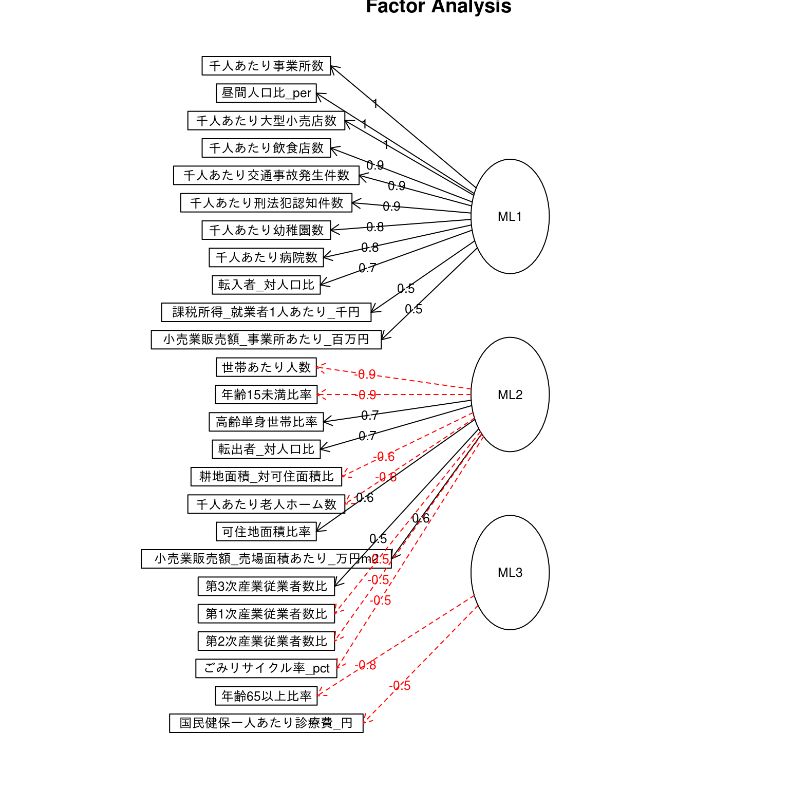
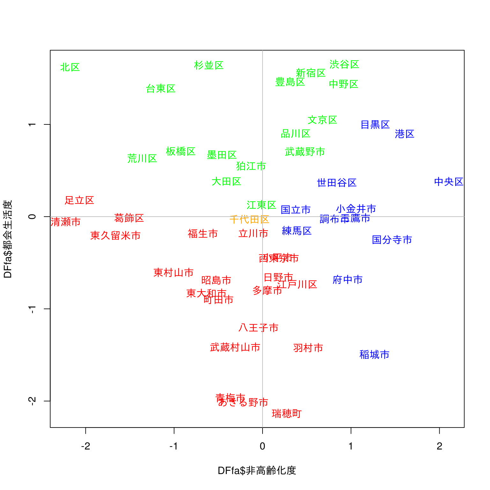
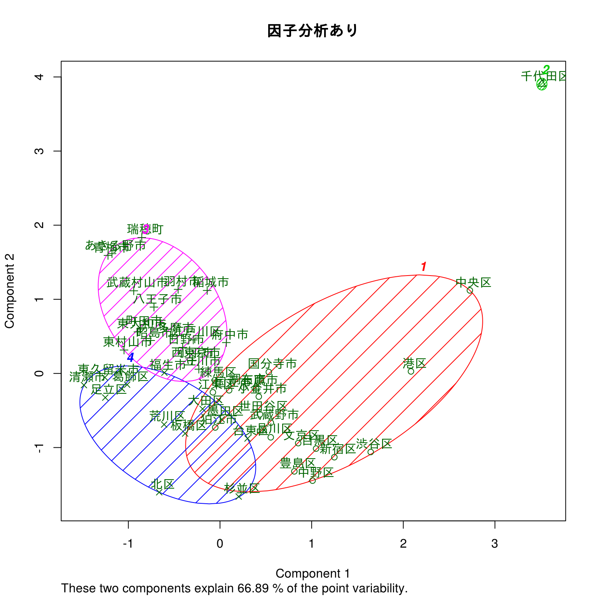
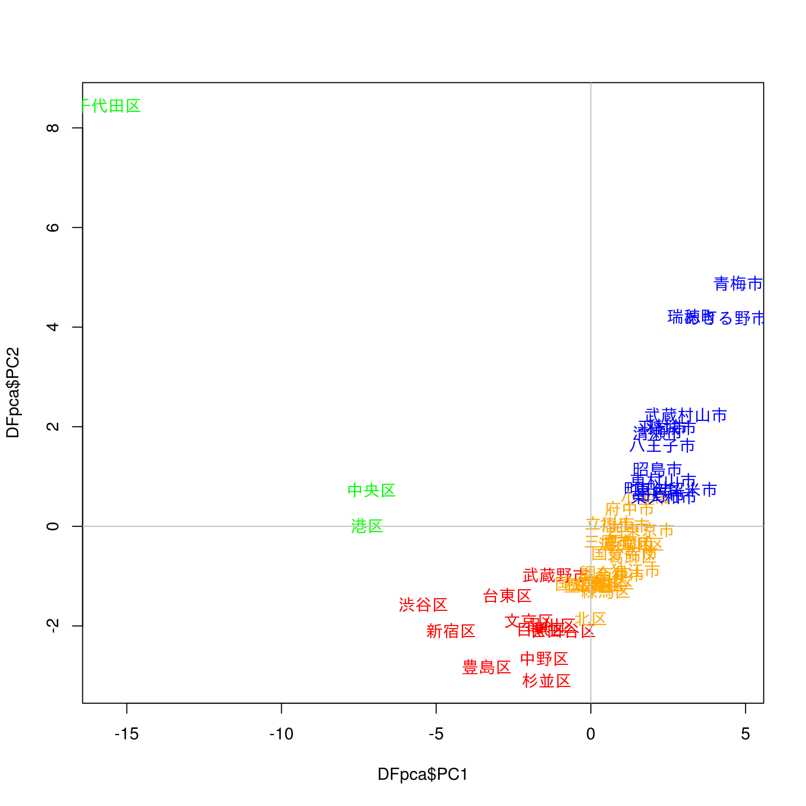
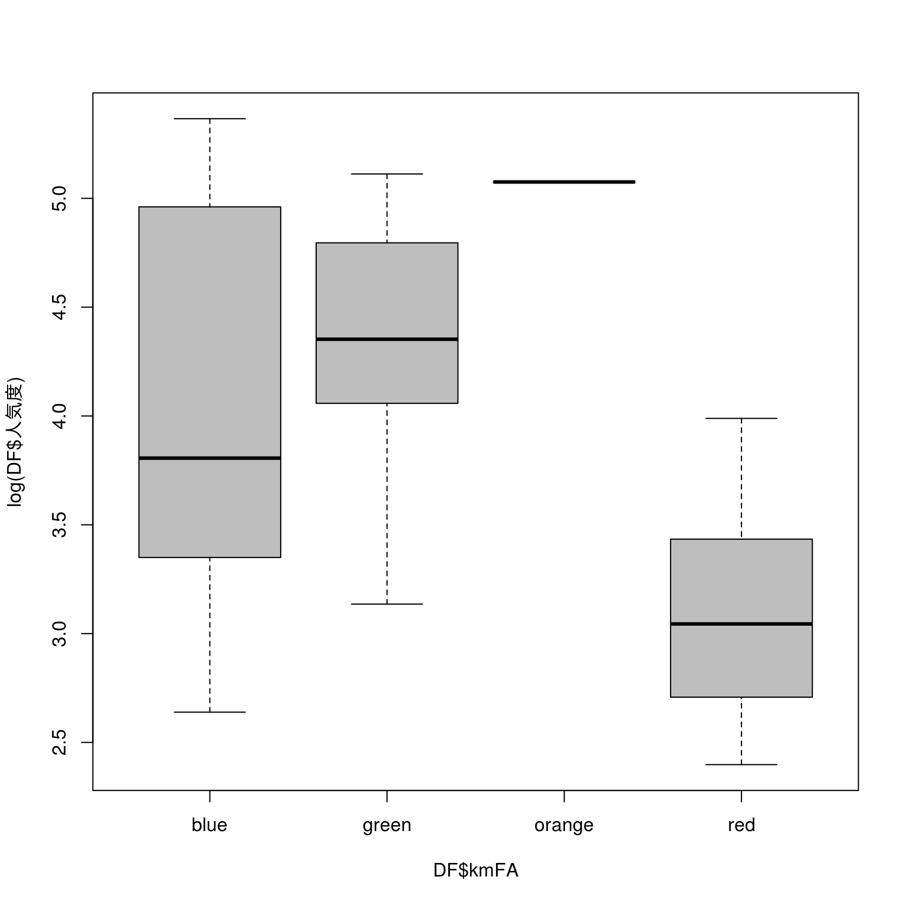
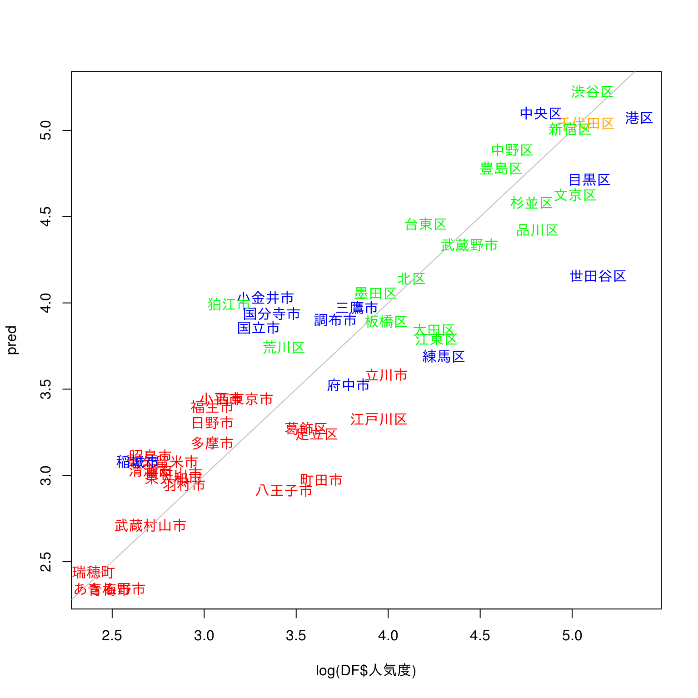

因子分析から回帰分析
概要
- データ読み込み
- 前処理として次元圧縮を行う
- 50の区市町を何らかの基準でクラスタに分けたい …クラスタリング
- 人気度がどのような要因に基づくのかを分析したい…回帰分析
１．データ読み込み
ファイルを読み込んでデータフレームを作成する
DF <- read.table( "TokyoSTAT_P25.csv",
sep = ",",
header = TRUE,
stringsAsFactors = FALSE,
fileEncoding="UTF-8") #文字コードはUTF-8
DT::datatable(DF)str(DF) #Structure## 'data.frame': 50 obs. of 28 variables:
## $ 市町村 : chr "千代田区" "中央区" "港区" "新宿区" ...
## $ 行政CD : int 13101 13102 13103 13104 13105 13106 13107 13108 13109 13110 ...
## $ 人気度 : int 160 125 214 147 151 67 51 71 123 163 ...
## $ 世帯あたり人数 : num 1.84 1.81 1.86 1.67 1.85 ...
## $ 年齢15未満比率 : num 0.1073 0.1054 0.1118 0.0766 0.0976 ...
## $ 年齢65以上比率 : num 0.192 0.159 0.17 0.186 0.185 ...
## $ 転入者_対人口比 : num 0.1572 0.1236 0.1065 0.0855 0.0827 ...
## $ 転出者_対人口比 : num 0.1046 0.0869 0.0878 0.0798 0.072 ...
## $ 昼間人口比_per : num 1739 494 432 230 167 ...
## $ 高齢単身世帯比率 : num 0.0966 0.0809 0.0919 0.1048 0.0979 ...
## $ 第1次産業従業者数比 : num 1e-04 2e-04 1e-04 1e-04 0e+00 1e-04 0e+00 2e-04 1e-04 7e-04 ...
## $ 第2次産業従業者数比 : num 0.105 0.119 0.153 0.109 0.144 ...
## $ 第3次産業従業者数比 : num 0.894 0.88 0.847 0.891 0.856 ...
## $ 可住地面積比率 : num 1 1 1 1 1 1 1 1 1 1 ...
## $ 耕地面積_対可住面積比 : num 0.0101 0.0101 0.0101 0.0101 0.0101 0.0101 0.0101 0.0101 0.0101 0.0101 ...
## $ 課税所得_就業者1人あたり_千円 : num 11450 6738 16955 6041 6631 ...
## $ 小売業販売額_事業所あたり_百万円 : num 383 611 391 422 104 ...
## $ 小売業販売額_売場面積あたり_万円m2: num 234 244 377 213 164 ...
## $ 国民健保一人あたり診療費_円 : int 211080 211614 207795 196377 217984 210835 224527 235694 236408 210350 ...
## $ ごみリサイクル率_pct : num 18.3 18.3 18.3 18.3 18.3 18.3 18.3 18.3 18.3 18.3 ...
## $ 千人あたり事業所数 : num 754.9 337.7 208 107.7 77.2 ...
## $ 千人あたり幼稚園数 : num 0.255 0.13 0.146 0.104 0.136 ...
## $ 千人あたり飲食店数 : num 79.3 44.27 27.79 17.69 7.37 ...
## $ 千人あたり大型小売店数 : num 1.91 0.888 0.497 0.343 0.092 ...
## $ 千人あたり病院数 : num 0.3184 0.0326 0.0731 0.049 0.0532 ...
## $ 千人あたり老人ホーム数 : num 0.0637 0.057 0.039 0.0398 0.0484 0.0455 0.0323 0.0347 0.0411 0.0634 ...
## $ 千人あたり交通事故発生件数 : num 29.01 9.86 11.96 6.03 4.28 ...
## $ 千人あたり刑法犯認知件数 : num 95.2 28.7 27.8 33.2 11.7 ...summary(DF[, -c(1:2)])## 人気度 世帯あたり人数 年齢15未満比率 年齢65以上比率
## Min. : 11.00 Min. :1.653 Min. :0.0737 Min. :0.1589
## 1st Qu.: 21.00 1st Qu.:1.945 1st Qu.:0.1046 1st Qu.:0.1893
## Median : 39.50 Median :2.122 Median :0.1195 Median :0.2010
## Mean : 61.38 Mean :2.138 Mean :0.1154 Mean :0.2023
## 3rd Qu.: 82.25 3rd Qu.:2.317 3rd Qu.:0.1285 3rd Qu.:0.2145
## Max. :214.00 Max. :2.752 Max. :0.1553 Max. :0.2480
## 転入者_対人口比 転出者_対人口比 昼間人口比_per 高齢単身世帯比率
## Min. :0.03010 Min. :0.03100 Min. : 74.90 Min. :0.06970
## 1st Qu.:0.04267 1st Qu.:0.04220 1st Qu.: 86.47 1st Qu.:0.08450
## Median :0.05710 Median :0.05170 Median : 92.15 Median :0.09270
## Mean :0.06119 Mean :0.05500 Mean : 150.96 Mean :0.09412
## 3rd Qu.:0.07208 3rd Qu.:0.06495 3rd Qu.: 110.20 3rd Qu.:0.10218
## Max. :0.15720 Max. :0.10460 Max. :1738.80 Max. :0.13050
## 第1次産業従業者数比 第2次産業従業者数比 第3次産業従業者数比 可住地面積比率
## Min. :0.000000 Min. :0.0650 Min. :0.5932 Min. :0.3687
## 1st Qu.:0.000200 1st Qu.:0.1106 1st Qu.:0.7783 1st Qu.:0.9864
## Median :0.000600 Median :0.1624 Median :0.8375 Median :0.9996
## Mean :0.000798 Mean :0.1741 Mean :0.8251 Mean :0.9492
## 3rd Qu.:0.001075 3rd Qu.:0.2213 3rd Qu.:0.8887 3rd Qu.:1.0000
## Max. :0.003500 Max. :0.4054 Max. :0.9349 Max. :1.0000
## 耕地面積_対可住面積比 課税所得_就業者1人あたり_千円
## Min. :0.01010 Min. : 2831
## 1st Qu.:0.01010 1st Qu.: 3519
## Median :0.02520 Median : 3971
## Mean :0.05467 Mean : 4744
## 3rd Qu.:0.08707 3rd Qu.: 4778
## Max. :0.20630 Max. :16955
## 小売業販売額_事業所あたり_百万円 小売業販売額_売場面積あたり_万円m2
## Min. : 81.09 Min. : 68.95
## 1st Qu.:145.44 1st Qu.: 91.87
## Median :165.73 Median :110.73
## Mean :198.68 Mean :129.05
## 3rd Qu.:211.69 3rd Qu.:147.85
## Max. :610.73 Max. :377.01
## 国民健保一人あたり診療費_円 ごみリサイクル率_pct 千人あたり事業所数
## Min. :196377 Min. :18.30 Min. : 26.06
## 1st Qu.:210896 1st Qu.:18.30 1st Qu.: 31.05
## Median :221345 Median :30.35 Median : 38.36
## Mean :220784 Mean :28.73 Mean : 68.46
## 3rd Qu.:228451 3rd Qu.:37.15 3rd Qu.: 49.89
## Max. :249198 Max. :52.40 Max. :754.88
## 千人あたり幼稚園数 千人あたり飲食店数 千人あたり大型小売店数 千人あたり病院数
## Min. :0.03610 Min. : 2.263 Min. :0.0540 Min. :0.01660
## 1st Qu.:0.06635 1st Qu.: 3.163 1st Qu.:0.1074 1st Qu.:0.03335
## Median :0.07405 Median : 4.237 Median :0.1217 Median :0.04535
## Mean :0.08286 Mean : 7.875 Mean :0.1987 Mean :0.05560
## 3rd Qu.:0.08955 3rd Qu.: 6.285 3rd Qu.:0.1680 3rd Qu.:0.06582
## Max. :0.25470 Max. :79.295 Max. :1.9102 Max. :0.31840
## 千人あたり老人ホーム数 千人あたり交通事故発生件数 千人あたり刑法犯認知件数
## Min. :0.02930 Min. : 2.635 Min. : 9.242
## 1st Qu.:0.04605 1st Qu.: 3.534 1st Qu.:12.200
## Median :0.06005 Median : 3.915 Median :14.659
## Mean :0.06767 Mean : 5.008 Mean :17.899
## 3rd Qu.:0.07845 3rd Qu.: 4.631 3rd Qu.:16.933
## Max. :0.21020 Max. :29.014 Max. :95.171２．因子分析による次元削減
並行分析で因子数を検討
- 最適な因子数、主成分分析の主成分数を見つけるため、平行分析を行う
- fa.parallel：平行分析（PA）の実施（視覚的に適切な因子数を判断）
- fm＝因子抽出法（minres最小残差法、pa主因子法、ml最尤法）
- ここでは最尤法を選択
- 1-2列目はIDなので除く
- 3列目は次元圧縮の対象ではないので除く
result.prl <- fa.parallel(DF[, -(1:3)], fm="ml")## In smc, smcs < 0 were set to .0
## In smc, smcs < 0 were set to .0## Parallel analysis suggests that the number of factors = 2 and the number of components = 2FA（因子分析）の実行
- fa：因子分析の実行
- fm＝因子抽出法（minres最小残差法、pa主因子法、ml最尤法）
- ここでは最尤法を選択
- nfactors＝因子数（抽出したい軸の数）
- rotate＝回転法（直交回転:varimax等、斜交回転:promax等）
- scores＝因子得点算出法
- 1-2列目はIDなので除く
- 3列目は次元圧縮の対象ではないので除く
resultFA <- fa(DF[, -(1:3)],
nfactors=3, #因子数を指定
fm = "ml", #pa 主因子法, ols 最小二乗法, ml 最尤法
rotate = "varimax", #varimax 直交、promax 斜交
scores = "regression") #regression 回帰法## In smc, smcs < 0 were set to .0
## In smc, smcs < 0 were set to .0FA結果の表示
- digits＝小数点以下表示桁の指定
- sort=TRUEを指定（各項目ごとの因子負荷量がソートされる）
- MRi…：各項目ごとの因子負荷量（各変数がどれだけ因子に寄与しているか）
- h2：共通性–各変数の値の変動が因子でどれだけ説明できるかを表す
- u2＝1-h2：独自性（uniqueness）–取りこぼしの度合（救えなかった情報）
print(resultFA, digits=2, sort=TRUE)## Factor Analysis using method = ml
## Call: fa(r = DF[, -(1:3)], nfactors = 3, rotate = "varimax", scores = "regression",
## fm = "ml")
## Standardized loadings (pattern matrix) based upon correlation matrix
## item ML1 ML2 ML3 h2 u2 com
## 千人あたり事業所数 18 0.97 0.16 0.14 1.00 0.0046 1.1
## 昼間人口比_per 6 0.97 0.11 0.12 0.97 0.0310 1.1
## 千人あたり大型小売店数 21 0.95 0.12 0.20 0.97 0.0327 1.1
## 千人あたり飲食店数 20 0.95 0.22 0.19 0.98 0.0171 1.2
## 千人あたり交通事故発生件数 24 0.95 0.00 0.14 0.92 0.0828 1.0
## 千人あたり刑法犯認知件数 25 0.91 0.23 0.05 0.88 0.1202 1.1
## 千人あたり幼稚園数 19 0.80 0.24 0.14 0.71 0.2866 1.2
## 千人あたり病院数 22 0.79 -0.01 -0.26 0.70 0.3041 1.2
## 転入者_対人口比 4 0.65 0.62 0.41 0.98 0.0240 2.7
## 課税所得_就業者1人あたり_千円 13 0.50 0.43 0.43 0.62 0.3763 2.9
## 小売業販売額_事業所あたり_百万円 14 0.49 0.17 0.45 0.47 0.5291 2.2
## 世帯あたり人数 1 -0.16 -0.92 -0.28 0.95 0.0503 1.3
## 年齢15未満比率 2 -0.06 -0.90 -0.09 0.83 0.1685 1.0
## 高齢単身世帯比率 7 0.03 0.74 -0.65 0.96 0.0368 2.0
## 転出者_対人口比 5 0.48 0.71 0.49 0.97 0.0283 2.6
## 耕地面積_対可住面積比 12 -0.13 -0.64 -0.11 0.45 0.5545 1.1
## 千人あたり老人ホーム数 23 0.01 -0.63 -0.16 0.43 0.5710 1.1
## 可住地面積比率 11 0.01 0.60 0.06 0.36 0.6361 1.0
## 小売業販売額_売場面積あたり_万円m2 15 0.44 0.58 0.34 0.65 0.3502 2.5
## 第3次産業従業者数比 10 0.09 0.54 0.23 0.35 0.6497 1.4
## 第1次産業従業者数比 8 -0.20 -0.54 0.08 0.34 0.6636 1.3
## 第2次産業従業者数比 9 -0.09 -0.54 -0.23 0.35 0.6536 1.4
## ごみリサイクル率_pct 17 -0.24 -0.53 0.11 0.36 0.6444 1.5
## 年齢65以上比率 3 -0.10 -0.19 -0.85 0.77 0.2337 1.1
## 国民健保一人あたり診療費_円 16 -0.15 -0.34 -0.48 0.36 0.6383 2.0
##
## ML1 ML2 ML3
## SS loadings 8.22 6.34 2.75
## Proportion Var 0.33 0.25 0.11
## Cumulative Var 0.33 0.58 0.69
## Proportion Explained 0.47 0.37 0.16
## Cumulative Proportion 0.47 0.84 1.00
##
## Mean item complexity = 1.5
## Test of the hypothesis that 3 factors are sufficient.
##
## The degrees of freedom for the null model are 300 and the objective function was 62.46 with Chi Square of 2488.15
## The degrees of freedom for the model are 228 and the objective function was 29.15
##
## The root mean square of the residuals (RMSR) is 0.07
## The df corrected root mean square of the residuals is 0.08
##
## The harmonic number of observations is 50 with the empirical chi square 152.33 with prob < 1
## The total number of observations was 50 with Likelihood Chi Square = 1102.82 with prob < 1.2e-114
##
## Tucker Lewis Index of factoring reliability = 0.442
## RMSEA index = 0.276 and the 90 % confidence intervals are 0.263 0.296
## BIC = 210.88
## Fit based upon off diagonal values = 0.98
## Measures of factor score adequacy
## ML1 ML2 ML3
## Correlation of (regression) scores with factors 1.00 0.99 0.98
## Multiple R square of scores with factors 1.00 0.98 0.96
## Minimum correlation of possible factor scores 0.99 0.97 0.93FA結果を図で表示
fa.diagram(resultFA,
rsize=0.8, e.size=0.1, #四角と円のサイズ
marg=c(.5,5,.5,.5), #余白の設定
cex=1)
#文字サイズ因子負荷量をプロットする
- 因子負荷量（変数ごとの因子への寄与）の値をタテヨコにプロットする。
- どの変数がどの因子に寄与しているかを把握できる。
- 第1因子と第2因子
#枠のみを作成する
# type="n"で点を描かない
# 因子負荷量は、resultFAの中のloadingsに格納されている
plot(resultFA$loadings[, 1],
resultFA$loadings[, 2], type="n")
#枠内にテキストを表示する
# テキストは因子負荷量のリストの行の名前を取得して使う
text(resultFA$loadings[, 1],
resultFA$loadings[, 2],
rownames(resultFA$loadings), col="steelblue")
#y=0の直線を引く
# 点(-1, 0)から点(1, 0)まで線を引けばよい
# lines(X, Y)でXとYのベクトルを指定する（散布図と同じ）
lines(c(-1, 1), c(0, 0), col="grey")
#x=0の直線を引く
# 点(0, -1)から点(0, 1)まで線を引けばよい
lines(c(0, 0), c(-1, 1), col="grey")- 第3因子と第2因子についても同様
plot(resultFA$loadings[, 3],
resultFA$loadings[, 2], type="n")
text(resultFA$loadings[, 3],
resultFA$loadings[, 2],
rownames(resultFA$loadings), col="steelblue")
lines(c(-1, 1), c(0, 0), col="grey")
lines(c(0, 0), c(-1, 1), col="grey")因子得点を確認
#因子得点(ケースごとの得点)はresultFAの中のscoresに格納されている
head(resultFA$scores)## ML1 ML2 ML3
## [1,] 6.2894840 -0.02794331 -0.1492526
## [2,] 1.9786426 0.38104655 2.1070813
## [3,] 0.9592143 0.89862833 1.6079372
## [4,] 0.1090359 1.56183037 0.5496946
## [5,] -0.2597478 1.05473972 0.6796176
## [6,] 0.5593991 1.39390666 -1.1519543#因子得点をデータフレームに変換
DFfa <- as.data.frame(resultFA$scores)
#行の名前を自治体名に変換
rownames(DFfa) <- DF$市町村
#意味を考えて因子に名前を付ける
names(DFfa) = c("ビジネス度","都会生活度","非高齢化度")
DT::datatable(DFfa)#因子得点について要約情報を表示
summary(DFfa)## ビジネス度 都会生活度 非高齢化度
## Min. :-0.61188 Min. :-2.13537 Min. :-2.2269
## 1st Qu.:-0.32142 1st Qu.:-0.67483 1st Qu.:-0.5171
## Median :-0.18733 Median :-0.01794 Median : 0.1119
## Mean : 0.00000 Mean : 0.00000 Mean : 0.0000
## 3rd Qu.:-0.03788 3rd Qu.: 0.69874 3rd Qu.: 0.6471
## Max. : 6.28948 Max. : 1.65297 Max. : 2.1071#標準偏差
apply(DFfa, 2, sd)## ビジネス度 都会生活度 非高齢化度
## 0.9975681 0.9918187 0.9815127３．因子得点をもとにクラスタリング
kMeans×因子得点でクラスタリング
kmFA <- kmeans(DFfa, 4, iter.max=50)
#色ラベルの配列を作るためにクラスタ番号の配列をコピー
color.kmFA <- kmFA$cluster
head(color.kmFA)## 千代田区 中央区 港区 新宿区 文京区 台東区
## 1 4 4 4 4 3#クラスタ番号を色名に変換する
#levels＝factor（カテゴリ変数）のラベルの指定
#クラスタの数に注意
color.kmFA <- as.factor(color.kmFA)
levels(color.kmFA) <- c("blue", "red", "green", "orange")
head(color.kmFA)## 千代田区 中央区 港区 新宿区 文京区 台東区
## blue orange orange orange orange green
## Levels: blue red green orange#factorの実体は整数型なので文字列に変換（ラベルの値が実体となる）
color.kmFA <- as.character(color.kmFA)
head(color.kmFA)## [1] "blue" "orange" "orange" "orange" "orange" "green"#因子得点(サンプルごとの点数)の値を色分けしてプロットする
#ラベル(市町村名＝DFfaの行の名前)を rownames(DFfa) で表示
#クラスタの色名color.kmFAで色分けをして表示
plot(DFfa$ビジネス度,
DFfa$都会生活度, type="n")
text(DFfa$ビジネス度,
DFfa$都会生活度, rownames(DFfa), col=color.kmFA)
lines(c(-10, 10), c(0, 0), col="grey")
lines(c(0, 0), c(-10, 10), col="grey")plot(DFfa$非高齢化度,
DFfa$都会生活度, type="n")
text(DFfa$非高齢化度,
DFfa$都会生活度, rownames(DFfa), col=color.kmFA)
lines(c(-10, 10), c(0, 0), col="grey")
lines(c(0, 0), c(-10, 10), col="grey")
比較用：因子分析の有無によるkMeansの変化
DF_kmeans <- DF[, -(1:3)] %>% data.frame()
rownames(DF_kmeans) <- DF[,1]
kmFA2 <- kmeans(DF_kmeans, 4, iter.max=50)
require(cluster)## Loading required package: clusterclusplot(DF_kmeans,kmFA2$cluster,color=TRUE,shade = TRUE,labels=2,lines=0,main = "因子分析なし",cex = 1)kmFA3 <- kmeans(DFfa, 4, iter.max=50)
clusplot(DFfa,kmFA3$cluster,color=TRUE,shade = TRUE,labels=2,lines=0,main = "因子分析あり",cex = 1)
(参考)主成分分析を元にクラスタリング
#主成分分析
resultPCA <- prcomp(DF[, -(1:3)], scale=TRUE)
#結果の要約
summary(resultPCA)## Importance of components:
## PC1 PC2 PC3 PC4 PC5 PC6 PC7
## Standard deviation 3.3971 2.1271 1.4791 1.27554 1.10198 0.84051 0.79699
## Proportion of Variance 0.4616 0.1810 0.0875 0.06508 0.04857 0.02826 0.02541
## Cumulative Proportion 0.4616 0.6426 0.7301 0.79518 0.84376 0.87201 0.89742
## PC8 PC9 PC10 PC11 PC12 PC13 PC14
## Standard deviation 0.76265 0.7053 0.61301 0.53764 0.45391 0.43334 0.36784
## Proportion of Variance 0.02327 0.0199 0.01503 0.01156 0.00824 0.00751 0.00541
## Cumulative Proportion 0.92069 0.9406 0.95562 0.96718 0.97542 0.98293 0.98835
## PC15 PC16 PC17 PC18 PC19 PC20 PC21
## Standard deviation 0.29898 0.27491 0.20076 0.17803 0.1413 0.11608 0.10136
## Proportion of Variance 0.00358 0.00302 0.00161 0.00127 0.0008 0.00054 0.00041
## Cumulative Proportion 0.99192 0.99495 0.99656 0.99783 0.9986 0.99916 0.99957
## PC22 PC23 PC24 PC25
## Standard deviation 0.07726 0.06019 0.03263 0.0002854
## Proportion of Variance 0.00024 0.00014 0.00004 0.0000000
## Cumulative Proportion 0.99981 0.99996 1.00000 1.0000000#各変数ごとの主成分（固有ベクトル）
#第3主成分まで表示
resultPCA$rotation[, 1:3]## PC1 PC2 PC3
## 世帯あたり人数 0.21817823 0.292007358 0.016652864
## 年齢15未満比率 0.17315873 0.282854276 0.107643674
## 年齢65以上比率 0.13827649 0.109660617 -0.462839305
## 転入者_対人口比 -0.28134219 -0.035917394 0.057305951
## 転出者_対人口比 -0.26794431 -0.117216398 0.117642903
## 昼間人口比_per -0.24316331 0.243126759 -0.063282831
## 高齢単身世帯比率 -0.07399042 -0.218733757 -0.512410750
## 第1次産業従業者数比 0.14312036 0.166901626 0.250632303
## 第2次産業従業者数比 0.14036634 0.191454238 -0.128220532
## 第3次産業従業者数比 -0.14144537 -0.192633089 0.125130549
## 可住地面積比率 -0.11383968 -0.257891119 -0.087326397
## 耕地面積_対可住面積比 0.15650544 0.244937181 0.128000027
## 課税所得_就業者1人あたり_千円 -0.23531538 -0.003764779 0.128319792
## 小売業販売額_事業所あたり_百万円 -0.18853341 0.053126273 0.272612089
## 小売業販売額_売場面積あたり_万円m2 -0.23711598 -0.087377992 0.069927304
## 国民健保一人あたり診療費_円 0.13891741 0.086561773 -0.327457796
## ごみリサイクル率_pct 0.14313231 0.127942834 0.261682729
## 千人あたり事業所数 -0.25378255 0.219289176 -0.056588990
## 千人あたり幼稚園数 -0.23505208 0.155132882 -0.083435715
## 千人あたり飲食店数 -0.26230625 0.191112884 -0.023531861
## 千人あたり大型小売店数 -0.25021531 0.226389573 0.003021881
## 千人あたり病院数 -0.15137829 0.284149431 -0.281049405
## 千人あたり老人ホーム数 0.12741348 0.292245219 0.020278499
## 千人あたり交通事故発生件数 -0.22590231 0.277312460 -0.014390255
## 千人あたり刑法犯認知件数 -0.24883963 0.187829606 -0.097897803#各ケースごとの主成分得点
#5自治体、第3主成分まで表示
resultPCA$x[1:5, 1:3]## PC1 PC2 PC3
## [1,] -15.612740 8.44712230 -2.0311835
## [2,] -7.096352 0.73514395 2.6988867
## [3,] -7.229065 0.01595016 1.9002137
## [4,] -4.511199 -2.09587518 0.8102051
## [5,] -2.009200 -1.88536136 -0.3385769#主成分得点(サンプルごとの点数)の値をタテヨコにプロットする
biplot(resultPCA,cex =1)
#主成分得点をデータフレームに変換
DFpca <- as.data.frame(resultPCA$x)
#行の名前を自治体名に変換
rownames(DFpca) <- DF$市町村
#主成分得点について要約情報を表示
summary(DFpca)[, 1:2]## PC1 PC2
## Min. :-15.6127 Min. :-3.0900
## 1st Qu.: -1.0704 1st Qu.:-1.1901
## Median : 0.6389 Median :-0.3572
## Mean : 0.0000 Mean : 0.0000
## 3rd Qu.: 2.0853 3rd Qu.: 0.7376
## Max. : 4.7703 Max. : 8.4471#標準偏差
apply(DFpca, 2, sd)[1:2]## PC1 PC2
## 3.397107 2.127114#主成分得点をもとにクラスタリング
#ここでは第3主成分までを使う
kmPCA <- kmeans(DFpca[, 1:2], 4, iter.max=50)
#色ラベルの配列を作るためにクラスタ番号の配列をコピー
color.kmPCA <- kmPCA$cluster
head(color.kmPCA)## 千代田区 中央区 港区 新宿区 文京区 台東区
## 4 1 1 1 3 1#クラスタ番号を色名に変換する
#levels＝factor（カテゴリ変数）のラベルの指定
color.kmPCA <- as.factor(color.kmPCA)
levels(color.kmPCA) <- c("blue", "red", "green", "orange")
head(color.kmPCA)## 千代田区 中央区 港区 新宿区 文京区 台東区
## orange blue blue blue green blue
## Levels: blue red green orange#factorの実体は整数型なので文字列に変換（ラベルの値が実体となる）
color.kmPCA <- as.character(color.kmPCA)
head(color.kmPCA)## [1] "orange" "blue" "blue" "blue" "green" "blue"#主成分得点(サンプルごとの点数)の値を色分けしてプロットする
#ラベル(市町村名＝DFfaの行の名前)を rownames(DFpca) で表示
#クラスタの色名color.kmFAで色分けをして表示
plot(DFpca$PC1, DFpca$PC2, type="n")
text(DFpca$PC1, DFpca$PC2, rownames(DFpca), col=color.kmPCA, cex = 1)
lines(c(-20, 20), c(0, 0), col="grey")
lines(c(0, 0), c(-10, 10), col="grey")
４．回帰分析
目的変数の分布を確認
#元のデータに因子得点とクラスタ番号を付加
DF <- cbind(DF, DFfa) #列どうしを結合
DF$kmFA <- color.kmFA #色の名前で付加
#人気度の分布
summary(DF$人気度)## Min. 1st Qu. Median Mean 3rd Qu. Max.
## 11.00 21.00 39.50 61.38 82.25 214.00#分布の確認
hist(DF$人気度, col="ivory3")
#偏っているので、対数をとる
hist(log(DF$人気度), col="ivory3")#クラスタごとの人気度の分布
boxplot(log(DF$人気度) ~ DF$kmFA, col="grey")
回帰分析（因子を使わないパターン）
- Estimate:パラメータの推定値
- p-value:モデルの有意確率（モデル全体について） 5%以上だと×
- t value:パラメータの推定値を標準誤差で割ったもの。
- Pr(>|t|):パラメータ毎の有意確率（本当は0なのに偶然値が出た確率。5%以上だと×）
- あてはまりは良いが、有意なパラメータは「ゴミリサイクル率」のみ→過適合や多重共線性の疑い
Lm1 <- lm(log(人気度) ~ ., data=DF[, c(3:28)])
summary(Lm1,digits = 2)##
## Call:
## lm(formula = log(人気度) ~ ., data = DF[, c(3:28)])
##
## Residuals:
## Min 1Q Median 3Q Max
## -0.60277 -0.13619 0.00777 0.12467 0.56727
##
## Coefficients:
## Estimate Std. Error t value Pr(>|t|)
## (Intercept) -1.408e+03 1.569e+03 -0.898 0.37832
## 世帯あたり人数 -2.532e+00 1.630e+00 -1.554 0.13336
## 年齢15未満比率 7.092e+00 1.443e+01 0.491 0.62763
## 年齢65以上比率 -1.678e+00 1.087e+01 -0.154 0.87855
## 転入者_対人口比 9.518e-01 2.235e+01 0.043 0.96639
## 転出者_対人口比 1.418e+01 2.728e+01 0.520 0.60790
## 昼間人口比_per 1.929e-03 1.942e-03 0.993 0.33051
## 高齢単身世帯比率 -4.455e+00 1.340e+01 -0.332 0.74245
## 第1次産業従業者数比 1.297e+03 1.593e+03 0.814 0.42356
## 第2次産業従業者数比 1.415e+03 1.568e+03 0.902 0.37601
## 第3次産業従業者数比 1.416e+03 1.568e+03 0.903 0.37551
## 可住地面積比率 -6.632e-01 7.389e-01 -0.898 0.37833
## 耕地面積_対可住面積比 -2.334e-01 2.189e+00 -0.107 0.91596
## 課税所得_就業者1人あたり_千円 3.493e-05 1.047e-04 0.334 0.74144
## 小売業販売額_事業所あたり_百万円 1.109e-03 1.984e-03 0.559 0.58145
## 小売業販売額_売場面積あたり_万円m2 -2.282e-03 5.210e-03 -0.438 0.66523
## 国民健保一人あたり診療費_円 7.340e-06 8.593e-06 0.854 0.40148
## ごみリサイクル率_pct -2.922e-02 9.830e-03 -2.973 0.00662 **
## 千人あたり事業所数 -2.546e-03 1.083e-02 -0.235 0.81610
## 千人あたり幼稚園数 2.685e-01 3.265e+00 0.082 0.93514
## 千人あたり飲食店数 -6.601e-03 6.039e-02 -0.109 0.91387
## 千人あたり大型小売店数 -1.874e+00 2.092e+00 -0.896 0.37926
## 千人あたり病院数 -2.905e+00 3.407e+00 -0.853 0.40221
## 千人あたり老人ホーム数 2.385e+00 3.670e+00 0.650 0.52193
## 千人あたり交通事故発生件数 1.135e-01 8.522e-02 1.332 0.19524
## 千人あたり刑法犯認知件数 -5.651e-03 1.891e-02 -0.299 0.76771
## ---
## Signif. codes: 0 '***' 0.001 '**' 0.01 '*' 0.05 '.' 0.1 ' ' 1
##
## Residual standard error: 0.3286 on 24 degrees of freedom
## Multiple R-squared: 0.9284, Adjusted R-squared: 0.8538
## F-statistic: 12.45 on 25 and 24 DF, p-value: 1.595e-08多重共線性の確認 - 変数が他の変数で説明できるか？の指標
#VIFは10を超えていると相関が高すぎる＝多重共線性が発生しているとされる
car::vif(Lm1)## 世帯あたり人数 年齢15未満比率
## 8.865640e+01 3.745960e+01
## 年齢65以上比率 転入者_対人口比
## 1.911331e+01 1.320354e+02
## 転出者_対人口比 昼間人口比_per
## 9.423737e+01 1.006671e+02
## 高齢単身世帯比率 第1次産業従業者数比
## 1.442162e+01 7.027825e+02
## 第2次産業従業者数比 第3次産業従業者数比
## 6.122394e+06 6.157581e+06
## 可住地面積比率 耕地面積_対可住面積比
## 4.632800e+00 6.407427e+00
## 課税所得_就業者1人あたり_千円 小売業販売額_事業所あたり_百万円
## 2.925883e+01 1.874163e+01
## 小売業販売額_売場面積あたり_万円m2 国民健保一人あたり診療費_円
## 4.046214e+01 4.680362e+00
## ごみリサイクル率_pct 千人あたり事業所数
## 4.847675e+00 6.723542e+02
## 千人あたり幼稚園数 千人あたり飲食店数
## 5.642512e+00 2.618992e+02
## 千人あたり大型小売店数 千人あたり病院数
## 1.608345e+02 1.123531e+01
## 千人あたり老人ホーム数 千人あたり交通事故発生件数
## 7.919866e+00 5.166385e+01
## 千人あたり刑法犯認知件数
## 2.698357e+01因子得点を使った回帰分析（因子得点のみを説明変数に使う）
- すべての説明変数が有意(Prが5%未満)
- 都会生活度の回帰係数が最も大きく、人気度に影響する
Lm2 <- lm(log(人気度) ~ ., data=DF[, c(3, 29:31)])
summary(Lm2)##
## Call:
## lm(formula = log(人気度) ~ ., data = DF[, c(3, 29:31)])
##
## Residuals:
## Min 1Q Median 3Q Max
## -0.85922 -0.26027 -0.04871 0.28865 0.98502
##
## Coefficients:
## Estimate Std. Error t value Pr(>|t|)
## (Intercept) 3.75975 0.05591 67.244 < 2e-16 ***
## ビジネス度 0.21443 0.05662 3.787 0.00044 ***
## 都会生活度 0.67453 0.05695 11.845 1.43e-15 ***
## 非高齢化度 0.31300 0.05755 5.439 1.99e-06 ***
## ---
## Signif. codes: 0 '***' 0.001 '**' 0.01 '*' 0.05 '.' 0.1 ' ' 1
##
## Residual standard error: 0.3954 on 46 degrees of freedom
## Multiple R-squared: 0.8013, Adjusted R-squared: 0.7883
## F-statistic: 61.82 on 3 and 46 DF, p-value: 3.591e-16#標準偏回帰係数βを算出
require(lm.beta) #βを算出するライブラリ## Loading required package: lm.betaLm2beta <- lm.beta(Lm2) #関数lm.beta()でβを計算
summary(Lm2beta)##
## Call:
## lm(formula = log(人気度) ~ ., data = DF[, c(3, 29:31)])
##
## Residuals:
## Min 1Q Median 3Q Max
## -0.85922 -0.26027 -0.04871 0.28865 0.98502
##
## Coefficients:
## Estimate Standardized Std. Error t value Pr(>|t|)
## (Intercept) 3.75975 0.00000 0.05591 67.244 < 2e-16 ***
## ビジネス度 0.21443 0.24895 0.05662 3.787 0.00044 ***
## 都会生活度 0.67453 0.77860 0.05695 11.845 1.43e-15 ***
## 非高齢化度 0.31300 0.35753 0.05755 5.439 1.99e-06 ***
## ---
## Signif. codes: 0 '***' 0.001 '**' 0.01 '*' 0.05 '.' 0.1 ' ' 1
##
## Residual standard error: 0.3954 on 46 degrees of freedom
## Multiple R-squared: 0.8013, Adjusted R-squared: 0.7883
## F-statistic: 61.82 on 3 and 46 DF, p-value: 3.591e-16#多重共線性の確認（相関のない因子を抽出したため1となる）
vif(Lm2)## ビジネス度 都会生活度 非高齢化度
## 1.000049 1.000037 1.000067Lm2による人気度予測結果（理論的な推定値）
pred <- predict(Lm2, newdata=DF)
#結果は対数化されているので、指数化して戻す
exp(pred)## 千代田区 中央区 港区 新宿区 文京区 台東区 墨田区
## 154.91330 164.11748 159.95251 149.70889 102.33261 86.43392 57.83513
## 江東区 品川区 目黒区 大田区 世田谷区 渋谷区 中野区
## 44.37177 83.17894 111.46583 46.72847 63.85676 185.99666 132.71143
## 杉並区 豊島区 北区 荒川区 板橋区 練馬区 足立区
## 97.67824 119.49625 62.84557 42.19740 49.08209 40.14222 25.49404
## 葛飾区 江戸川区 八王子市 立川市 武蔵野市 三鷹市 青梅市
## 26.41747 27.82753 18.43428 35.92869 76.49622 53.07712 10.39364
## 府中市 昭島市 調布市 町田市 小金井市 小平市 日野市
## 33.97742 22.52340 49.46195 19.57689 56.35827 31.40962 27.29376
## 東村山市 国分寺市 国立市 福生市 狛江市 東大和市 清瀬市
## 20.33244 51.34531 47.42981 29.98082 54.31014 19.81005 20.66471
## 東久留米市 武蔵村山市 多摩市 稲城市 羽村市 あきる野市 西東京市
## 21.77794 15.04207 24.21405 21.73554 19.03401 10.42980 31.35671
## 瑞穂町
## 11.46688#実測値と理論上の推定値
plot(log(DF$人気度), pred, type="n")
text(log(DF$人気度), pred, DF$市町村, col=color.kmFA)
lines(c(0, 10), c(0, 10), col="grey")